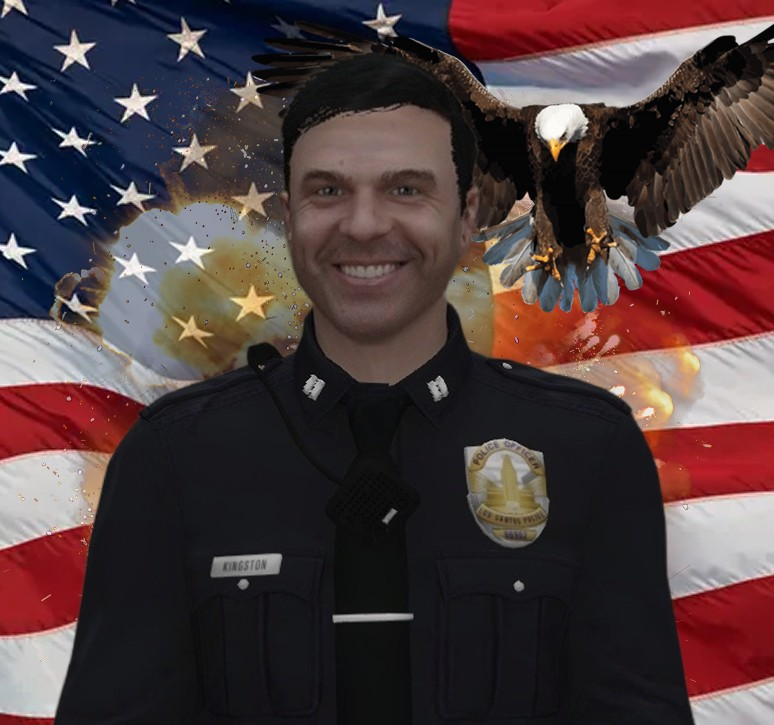

Фрэнк Дребин
Капитан · ранее возглавлял станцию Mission Row
Один из первых капитанов LSPD, ранее возглавлявший станцию Mission Row. За годы службы он зарекомендовал себя как принципиальный и требовательный руководитель, уделявший особое внимание дисциплине и эффективности работы подразделений.
Он активно участвовал в оперативной деятельности, поддерживая подчинённых не только приказами, но и личным присутствием на службе. В период его руководства станция демонстрировала стабильные результаты и высокий уровень взаимодействия между подразделениями.
Несмотря на завершение службы, его вклад и профессиональные стандарты продолжают оказывать влияние на работу Mission Row.